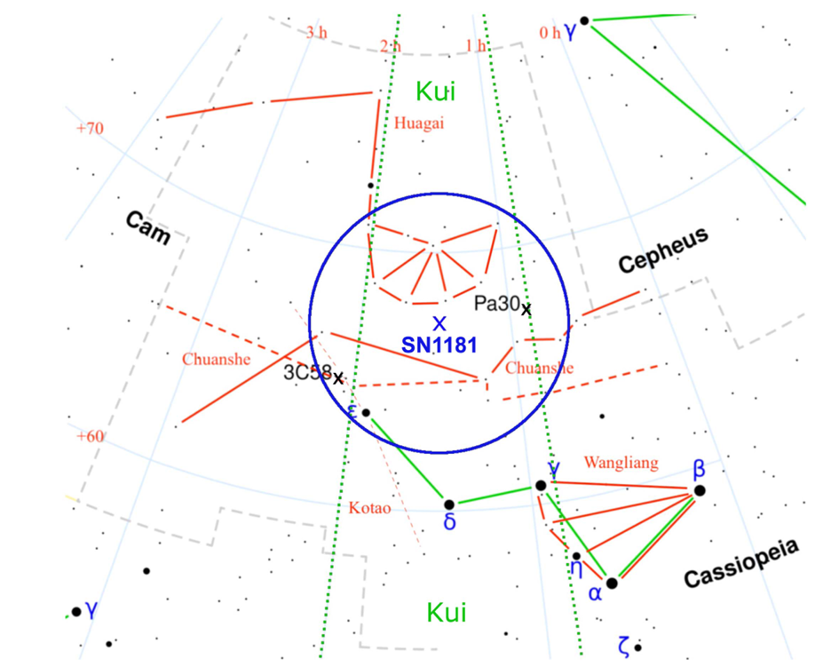

Astrophysical Research Analysis
THE REMNANT AND ORIGIN OF THE
THE REMNANT AND ORIGIN OF THE
HISTORICAL SUPERNOVA 1181 AD
Ritter et al. (2021) • A Cosmic Cold Case Solved
Presented By
Mohamed Esam Abdelrazek
2328139
Presented By
Member Name
ID Code
Section I: Introduction
I. The 1181 Supernova Mystery
- An 800-year-old astronomical mystery documenting a 12th-century event.
- Identified as a 'guest star' by court astronomers in China and Japan.
- Extraordinary visibility: Remained in the sky for 185 days starting August 1181 CE.
- The last millennium's only historical supernova without a verified origin point.
Section I: Introduction
II. A Sudden Appearance in the Sky
- Sudden emergence as a bright, static point of light that eventually faded.
- Historical brightness comparison was frequently made with the planet Saturn.
- Thermonuclear nature confirmed by the steady decay of its light curve.
- Core Challenge: High-energy events typically leave clear markers for centuries.
Section I: Introduction
III. Why This Is a Problem
- Standard Supernovae leave massive markers like dense Nebulae and Pulsars.
- Despite known historical sky positions, no remnant was confirmed for 800 years.
- Led to theories about unusual low-luminosity explosions or surviving cores.
- Did researchers misidentify the target region or the fundamental type of explosion?
Section I: Introduction
IV. The First Candidate: 3C 58
- A prominent supernova remnant (SNR) containing an active, young pulsar.
- Geographically located near the historically predicted sky coordinates.
- Accepted for decades as the only viable counterpart to the recorded 1181 AD event.
- The match seemed plausible based on its radio brightness and sky position.
Section I: Introduction
V. Why 3C 58 Was Rejected
- Radio observations of its physical expansion indicate an age of ≈7,000 years.
- Pulsar spin-down models independently estimate an age of ≈5,400 years.
- Both physical metrics prove 3C 58 is far too old for an 1181 AD event.
- This chronological mismatch forced a restart in the search for the real remnant.
Section 2.1
Methodology
I. Coordinates & Positional Concordance

- Averaged 5 historical positions from ancient court records (Hoffmann et al. 2020).
- Applied J2000 coordinate transformations for axial precession.
- Analyzed the position relative to asterisms: Wangliang, Huagai, and Chuanshe.
- Verified Gaia proper motion (2.7 mas yr-1), finding negligible drift (∼3").
Section 2.2
Methodology
II. Observations: Archival Data & PCA
- Re-reduced 2014 SparsePak IFU data from the 3.5m WIYN Telescope at KPNO.
- The IFU provided a 72" × 71" spatial grid using 82 dedicated fibers.
- Wavelength coverage spanned 4280–7095 Å with a resolution of 3.35 Å.
- Utilized Principal Component Analysis (PCA) for complex sky subtraction.
- PCA was vital because sky fibers were contaminated by nebular emission.
Section 2.2
Methodology
III. Observations: Optical Spectroscopy
- Conducted July 2016 observations using the giant 10m GTC Telescope.
- Used OSIRIS instrument with grism R1000B (3700–7000 Å range).
- Employed 2 × 2 binning for a spatial scale of 0.254" per individual pixel.
- Total integration time of 40 minutes (divided into 2 × 20 minute blocks).
- Used GTCMOS pipeline for absolute wavelength calibration accuracy.
Section 2.3
Methodology
IV. Expansion Velocity Measurement
- Focused on the [S II] doublet (6716, 6731 Å) to track gas kinetics.
- Computed Doppler shifts via Cross-Correlation with zero-velocity templates.
- Developed a Position-Velocity (PV) diagram showing sharp shell variations.
- Applied Gaussian minima fitting to extract peak radial velocities accurately.
- Maintained radial velocity measurement accuracy within a few km s-1.

Section 2.4
Methodology
V. Interstellar Extinction
- Consulted 3D extinction maps from Gaia-2MASS and PanSTARRS databases.
- Cross-checked neutral hydrogen column density from HI4PI survey data.
- Calculated AV = 2.4 ± 0.2 mag by analyzing stars within 10' of Pa 30.
- Used Gaia EDR3 parallaxes to confirm the distance for extinction correction.
- This correction was essential for calculating true peak intrinsic luminosity.
Section III: Conclusion
I. The Kinematic Age
- Measured Expansion Velocity: ∼1100 km/s in the high-velocity shell.
- Derived Physical Diameter: 2.2 ± 0.4 pc at a distance of 2.3 kpc.
- Kinematic age calculated at ≈990 years (Free Expansion phase).
- The physical timeline matches the 1181 AD explosion perfectly.
Section III: Conclusion
II. Positional Concordance Summary
- Separation between Pa 30 and historical records: Only 3.5 degrees of arc.
- Fits Chinese descriptions of appearing near the asterism "Huagai".
- Aligns perfectly with Japanese records of being close to "Wangliang" (Cassiopeia).
- Spatial agreement is significantly stronger than previously accepted remnants.
Section III: Conclusion
III. Ruling Out 3C 58
- 3C 58 is located 4.5 degrees away from the historical target coordinate.
- It lies in the "Kotao" asterism, which historical texts never mentioned.
- If it were the SN 1181 source, it would be described near ε Cas.
- Physical age and positional inconsistencies definitively exclude it as a remnant.
Section III: Conclusion
IV. Subluminous Magnitude
- Peak apparent magnitude calculated at -0.5 to +1.0 (Saturn-like).
- Correcting for dust extinction gives an absolute magnitude of -14 to -12.5.
- This is far fainter than a standard Type Ia Supernova (typically -19).
- Proves the explosion was a Subluminous thermonuclear event.
Section III: Conclusion
V. The Merger Scenario
- "Parker's star" is extremely hot (∼200,000 K) and hydrogen-poor.
- Nebula is rich in Neon, Magnesium, and Sulfur (products of fusion).
- Indicates a merger between Oxygen-Neon (ONe) and Carbon-Oxygen (CO) white dwarfs.
- Explains the incomplete combustion characteristic of a rare Type Iax supernova.
Section III: Conclusion
VI. A Unique Astrophysical Find
- Pa 30 is the only confirmed remnant of a Type Iax SN in our Galaxy.
- Provides a rare "live" view of a surviving stellar core after a thermonuclear blast.
- Supports the double-degenerate merger model for low-luminosity explosions.
- Offers a unique opportunity to study post-merger stellar evolution.
Section III: Conclusion
VII. Final Verdict
"Pa 30 and Parker's Star are definitively identified as the 1181 AD Remnant."
An 840-year cold case is now officially closed.
THANK YOU!